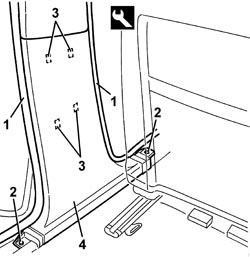

7040H36 CENTRE PILLAR LOWER ELEMENT (ONE), LEFT OR RIGHT - R.R
- Path
- Procedures > 70 FITTINGS > 7040 BODY INTERIOR FITTINGS AND TRIM > 7040H ROOF PANEL AND PILLARS LINING > 7040H36 CENTRE PILLAR LOWER ELEMENT (ONE), LEFT OR RIGHT - R.R
- Kind
- repair procedure (removal / refitting; the operation number is the code)
- Applies to
- all engines; all production periods
- Interactive page
- https://sloeber94.github.io/elrnDB/#/939011264
Applies to: all engines; all production periods
 Removing
Removing
 Refitting
RefittingOp. 7040L40 FRONT DOOR RUNNING BOARD (ONE), LEFT OR RIGHT - R.R.
Op. 7050A20 ONE-PIECE REAR SEAT CUSHION - R.R.
Op. 7040L44 REAR DOOR RUNNING BOARD (ONE), LEFT OR RIGHT - R.R.
- Move the seat into the front end of travel position.
1. Release the door housing seals in the area of the lower pillar cover.
2. Undo the bolts.
3. Release the inner retainers using the special tool.
Tool | Description | Function | Validity |
|---|---|---|---|
1823015000 | Knife | Retainer removal |
4. Keep the lower pillar cover.

Applies to: all engines; all production periods
Refitting
Removing- Check that the lower pillar cover is not damaged.
- Place the cover in position and attach the inner retainers.
- Tighten the bolts.
- Fit the door housing seals.
- Place the seat in the correct position.
Op. 7040L44 REAR DOOR RUNNING BOARD (ONE), LEFT OR RIGHT - R.R.
Op. 7050A20 ONE-PIECE REAR SEAT CUSHION - R.R.
Op. 7040L40 FRONT DOOR RUNNING BOARD (ONE), LEFT OR RIGHT - R.R.
Topics linked from this page (3)
- 7040L40 FRONT DOOR RUNNING BOARD (ONE), LEFT OR RIGHT - R.R.
- 7040L44 REAR DOOR RUNNING BOARD (ONE), LEFT OR RIGHT - R.R.
- 7050A20 ONE-PIECE REAR SEAT CUSHION - R.R.
Topics that link to this page (16)
- 5505C28 ENGINE COMPARTMENT AND A.B.S BUILT-IN WIRING - R.R.
- 5505C41 PASSENGER COMPARTMENT WIRING - R.R
- 5570T27 AERIAL SUPPORT - R.R
- 5570T31 AERIAL COAXIAL LEAD - R R
- 5580C40 SIDE BAG SENSOR (ONE), LH OR RH - R.R.
- 5580C50 WINDOW BAG MODULE (ONE) LH OR RH - R.R
- 7010A14 REAR SIDE DOOR - ADJUST CENTERING AND MOULDING - INCLUDES ADAPTATION OF HINGES AND SEALS ON DOOR COMPARTMENT
- 7010A24 REAR SIDE DOOR HINGES (BOLTED) - REPAIR OR REPLACE WITH DOOR REMOVED
- 7030B12 SLIDING ROOF (ASSEMBLY) - R+R
- 7030B40 DRAINAGE CHANNEL - R R
- 7030B50 SUN ROOF SLIDING GUIDE (ONE), LH OR RH - R.R
- 7040H10 ROOF PANEL LINING - R.R.
- 7040H16 ROOF PANEL LINING FOR VERSIONS WITH SUN ROOF - R.R
- 7040H38 CENTRE PILLAR UPPER ELEMENT (ONE), LEFT OR RIGHT - R.R
- 7040L18 PASSENGER COMPARTMENT FLOOR REAR CARPET - R.R.
- 7065A10 FRONT SEAT BELT (ONE) LEFT OR RIGHT - R.R.